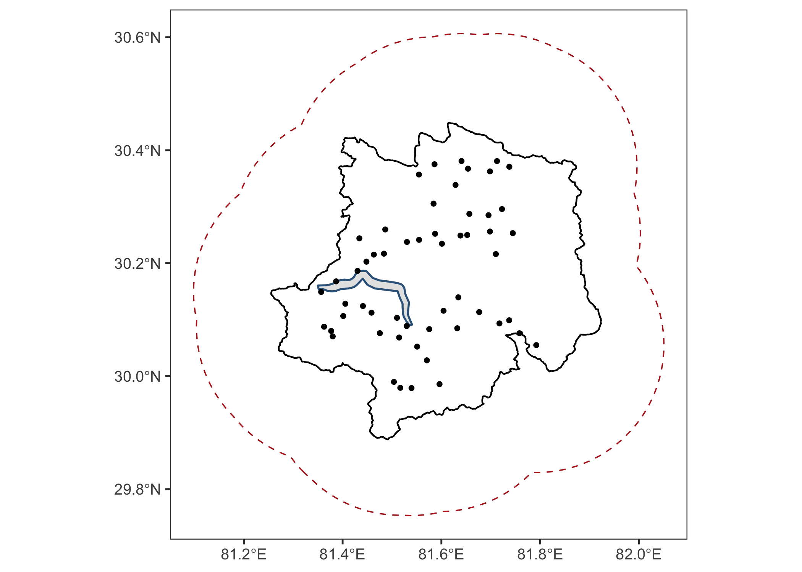
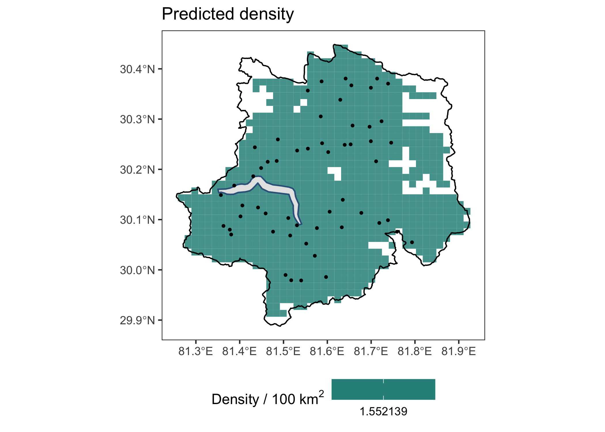
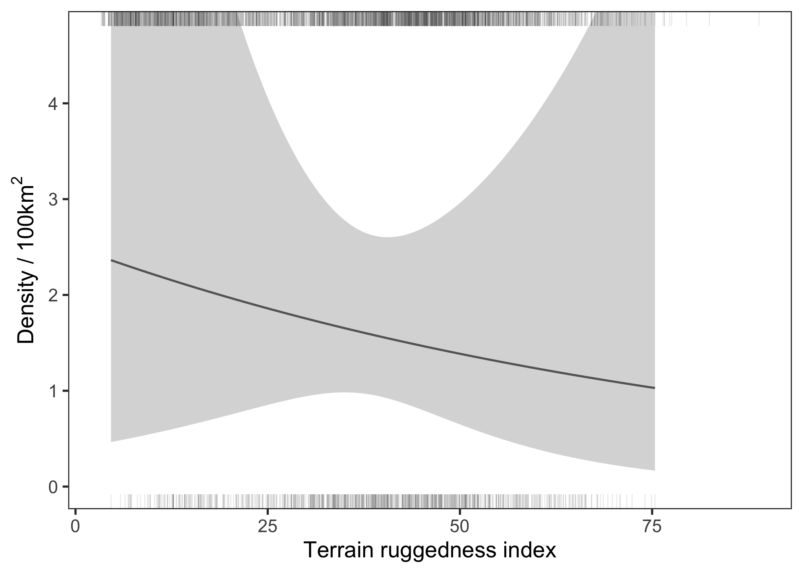
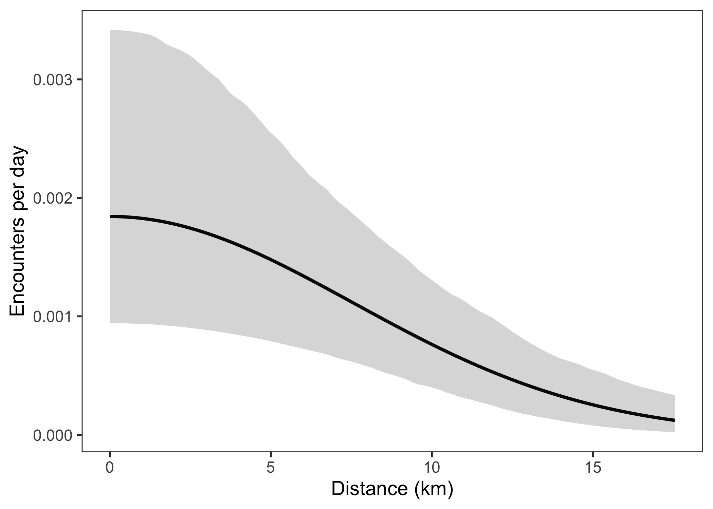
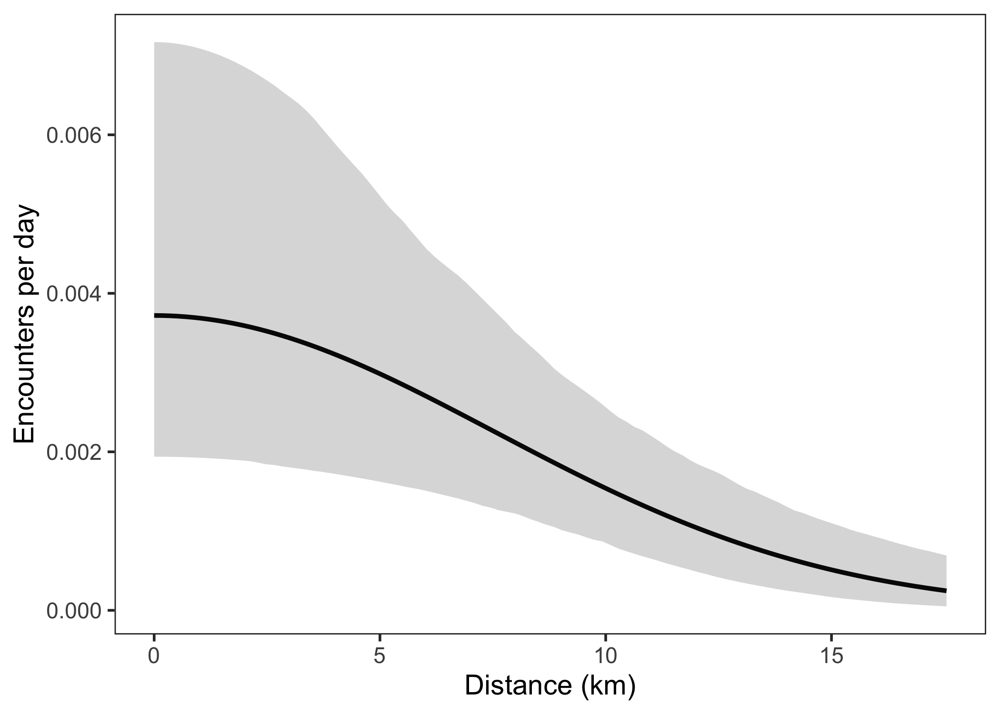
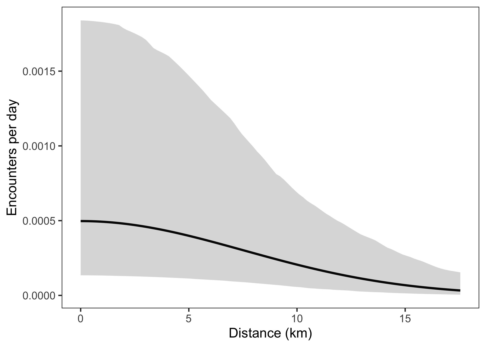
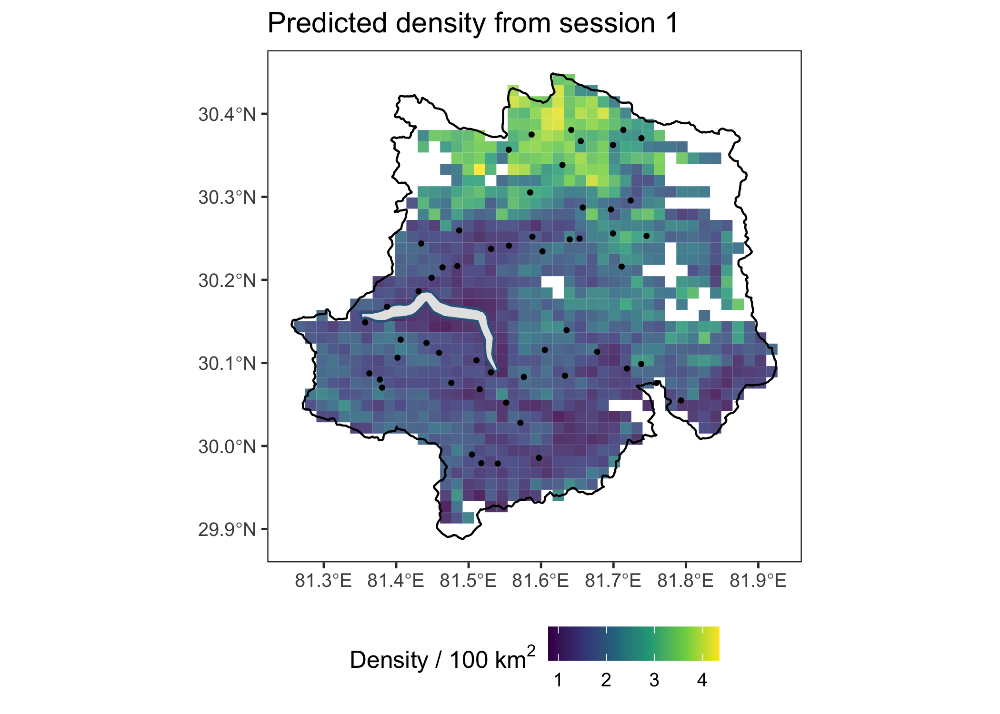

# Packages needed
library(dplyr)
library(secr)
library(sf)
library(ggplot2)
library(MASS)
source("tutorials/namkha_basic/code/more-utilities.R")Report advanced model results
1 Covered in this tutorial
- Summarise AIC, abundance, density, and precision for fitted advanced models
- Report abundance over the elevation-constrained Namkha survey area
- Replace model
userdistobjects when reporting over a new mask - Make predicted density maps for full, shortened, and multisession analyses
- Plot density covariate effects for the selected example models
- Plot detection functions for baseline, cliff, and valley/stream detector settings
2 Introduction
This tutorial turns fitted advanced models into results tables, maps, and covariate-effect plots. The reporting workflow is the same in spirit as the basic tutorial, but the advanced models introduce one important extra step: because the fitted models used custom gorge-avoiding movement distances, reporting over a new mask requires a matching userdist object for that mask.
The full-survey, shortened-survey, and multisession workflows are similar. The differences are the fitted model file, the traps object used for plotting, and the way multisession abundance and density predictions are returned.
3 Preparations
All three results workflows use the same plotting packages and the plot_detfunction() helper from the basic tutorial.
4 Common reporting pattern
Model fitting used mask_model, the elevation-constrained trap-buffer mask. Reporting uses mask_survey_area_elev, the elevation-constrained Namkha survey-area mask. This keeps abundance and density on the biological and management region of interest, while still allowing the likelihood to account for activity centres outside the boundary.
For region.N(), the fitted model needs a userdist object whose columns match the reporting mask. The scripts therefore create fitted_models_region, a copy of the fitted model list with the user-distance object replaced by userd_survey_area_elev. The original fitted models are not refitted.
region.N() can return expected abundance, E.N, and realised abundance, R.N. Expected abundance is the integral of the fitted density surface over the region. Realised abundance is the number of individuals in a particular realisation of the spatial point process. For these reporting tables we use E.N, because it is the smoother model-based abundance estimate most commonly reported with density.
For maps, the mask starts as points because that is what secr uses for numerical integration. To display a density surface, the scripts convert each mask point to a square polygon centred on the point. The square extends half the mask spacing in each direction, so adjacent squares tile the mask region.
5 Full-survey results
The full-survey results use the fitted models from 04a_model_fitting_full.R. The reporting mask is the elevation-constrained Namkha survey area, and the matching userdist object is userd_survey_area_elev.
results_dir <- "tutorials/namkha_advanced/output/results/full"
dir.create(results_dir, recursive = TRUE, showWarnings = FALSE)
load("tutorials/namkha_advanced/output/namkha_advanced_secr_inputs_capthist.RData")
load("tutorials/namkha_advanced/output/namkha_advanced_secr_inputs_mask.RData")
load("tutorials/namkha_advanced/output/namkha_advanced_fitted_models_full.RData")
# Put fitted models in one named list for easy looping
fitted_models <- list(f0 = f0, f1 = f1, f2 = f2, f3 = f3, f4 = f4)
# Mask to use when estimating abundance and density, and maps
extrap_mask <- mask_survey_area_elev
# User-distance matrix matching the extrapolation mask
extrap_mask_userd <- userd_survey_area_elev
# `mask_model` was used for fitting, but abundance is extrapolated to `extrap_mask`
survey_area_km2 <- nrow(extrap_mask) * attr(extrap_mask, "area") / 100The abundance table uses expected abundance, E.N, from region.N(). Density is abundance divided by the reporting-mask area in square kilometres.
# To use region.N to estimate abundance on a new mask, need to replace the model's
# userdist with the new mask's userdist. Do this for all models so that we can estimate
# abundance for all models.
fitted_models_region <- lapply(fitted_models, function(model) {
model$details$userdist <- extrap_mask_userd
model
})
# Function to extract abundance estimates from secr's region.N
# abundance = E.N (expected abundance) or R.N (realised abundance)
extract_abundance <- function(model_name, abundance = c("E.N")) {
rn <- region.N(fitted_models_region[[model_name]], region = extrap_mask)
data.frame(
modelname = model_name,
estimate = rn[abundance, "estimate"],
SE.estimate = rn[abundance, "SE.estimate"],
lcl = rn[abundance, "lcl"],
ucl = rn[abundance, "ucl"]
)
}
# Estimate abundance for each fitted model over the survey area.
# Add density = abundance / area.
abundance_table <- lapply(names(fitted_models), extract_abundance) %>%
bind_rows() %>%
mutate(
D = estimate / survey_area_km2,
Dlcl = lcl / survey_area_km2,
Ducl = ucl / survey_area_km2,
CV = 100 * SE.estimate / estimate
)
# Add AIC results and combine them with abundance and density
aic_table <- AIC(f0, f1, f2, f3, f4, criterion = "AICc") %>%
mutate(modelname = row.names(.)) %>%
left_join(abundance_table, by = "modelname")
# Save the combined summary table
write.csv(
aic_table %>%
dplyr::select(modelname, model, AIC, AICc, dAICc, AICcwt, estimate, lcl, ucl, D, Dlcl, Ducl, CV),
file = file.path(results_dir, "namkha_advanced_results_abundance_AIC_full.csv"),
row.names = FALSE
)
# Use the model with the lowest AICc for the density surface map
best_model_name <- aic_table$modelname[which.min(aic_table$AICc)]
best_model <- fitted_models_region[[best_model_name]]
aic_table model detectfn npar
1 D~1 lambda0~valley_stream sigma~1 hazard halfnormal 4
2 D~std_tri lambda0~cliff + valley_stream sigma~1 hazard halfnormal 6
3 D~1 lambda0~1 sigma~1 hazard halfnormal 3
4 D~std_elev lambda0~1 sigma~1 hazard halfnormal 4
5 D~std_tri lambda0~1 sigma~1 hazard halfnormal 4
logLik AIC AICc dAICc AICcwt modelname estimate SE.estimate
1 -107.5876 223.175 225.080 0.000 0.5661 f3 33.31666 8.633622
2 -104.9857 221.971 226.392 1.312 0.2937 f4 34.14462 8.784032
3 -110.8342 227.668 228.759 3.679 0.0899 f0 33.23033 8.566180
4 -110.6667 229.333 231.238 6.158 0.0260 f2 33.70972 8.518376
5 -110.7390 229.478 231.383 6.303 0.0242 f1 33.55322 8.485167
lcl ucl D Dlcl Ducl CV
1 20.21421 54.91186 0.01552139 0.009417289 0.02558204 25.91383
2 20.78936 56.07939 0.01590711 0.009685238 0.02612597 25.72597
3 20.21296 54.63103 0.01548117 0.009416705 0.02545121 25.77820
4 20.70037 54.89491 0.01570450 0.009643779 0.02557415 25.26979
5 20.59699 54.65938 0.01563160 0.009595618 0.02546442 25.28868The survey-region map shows the Namkha boundary, the trap-buffer region, the gorge, and the camera locations. It is useful for checking the spatial relationship between the fitted and reported regions.
# Convert traps, the survey area boundary, and the gorge to sf objects for plotting
traps_sf <- st_as_sf(full_traps, coords = c("x", "y"), crs = my_crs)
survey_area_sf <- st_as_sf(survey_area)
gorge_sf <- st_as_sf(gorge)
# Plot the Namkha boundary, the trap-buffer region, the gorge, and the camera locations
survey_region_plot <- ggplot() +
geom_sf(data = survey_area_sf, fill = NA, colour = "black", linewidth = 0.5) +
geom_sf(data = st_as_sf(all_sess_masks), fill = NA, colour = "firebrick", linewidth = 0.4, linetype = 2) +
geom_sf(data = gorge_sf, colour = "steelblue4", linewidth = 0.6) +
geom_sf(data = traps_sf, colour = "black", size = 1.1) +
labs(x = NULL, y = NULL) +
theme_bw(base_size = 12) +
theme(panel.grid = element_blank())
survey_region_plot
The density map is made from the lowest-AICc model. predictDsurface() returns density per hectare, so the values are multiplied by 10000 to display density per 100 km2.
# User sets the model to make the map for.
# Usually set this to best_model.
map_model <- best_model
# Predict density over the Namkha survey area
pred_surface <- predictDsurface(map_model, mask = extrap_mask, cl.D = FALSE)
# Convert mask points to square cells so the predicted density is easier to plot
density_cells <- st_as_sf(data.frame(extrap_mask), coords = c("x", "y"), crs = my_crs)
density_cells <- st_buffer(
density_cells,
dist = attr(extrap_mask, "spacing") / 2,
endCapStyle = "SQUARE",
nQuadSegs = 1
)
# Convert density from animals per hectare to animals per 100 km2
density_cells$D_per_100km2 <- covariates(pred_surface)[, "D.0"] * 10000
# Plot predicted density together with the survey boundary, gorge, and trap locations
density_plot <- ggplot() +
geom_sf(data = density_cells, aes(fill = D_per_100km2), colour = NA, alpha = 0.85) +
geom_sf(data = survey_area_sf, fill = NA, colour = "black", linewidth = 0.5) +
geom_sf(data = gorge_sf, colour = "steelblue4", linewidth = 0.6) +
geom_sf(data = traps_sf, colour = "black", size = 0.8) +
scale_fill_viridis_c(name = expression("Density / 100 km"^2), option = "D") +
labs(x = NULL, y = NULL, title = "Predicted density") +
theme_bw(base_size = 12) +
theme(panel.grid = element_blank(), legend.position = "bottom")
density_plot
# Save survey and density maps
ggsave(file.path(results_dir, "namkha_advanced_survey_region_full.png"), survey_region_plot, width = 7, height = 5, dpi = 200)
ggsave(file.path(results_dir, "namkha_advanced_predicted_density_full.png"), density_plot, width = 7, height = 5, dpi = 200)
# Save the predicted density surface as a shapefile for later mapping
st_write(
density_cells %>% dplyr::select(D_per_100km2),
dsn = file.path(results_dir, "namkha_advanced_predicted_density_full.shp"),
delete_layer = TRUE,
quiet = TRUE
)For covariate-effect plots we use f4, because it includes both the density and detection covariates used in these examples. The density plot varies ruggedness while holding any other density covariates constant.
# User sets the model to make plot for.
# f4 includes the density and detection covariates used in these example plots.
covplot_model <- fitted_models_region[["f4"]]
# Identify which covariates appear in the density part of the chosen model
model_covs <- covplot_model$betanames
dens_covs <- sub("^D\\.", "", model_covs[grepl("^D\\.", model_covs)])
dens_covs <- intersect(dens_covs, names(covariates(extrap_mask)))
dens_covs[1] "std_tri"# User sets the density covariate to plot.
# Any other density covariates in the same model will be held constant.
focal_cov <- "std_tri"
focal_cov_full_name <- "Terrain ruggedness index"
if (!(focal_cov %in% dens_covs)) {
stop("focal_cov must be a density covariate in chosen model.")
}
newdata <- data.frame(
focal_values = seq(
min(covariates(extrap_mask)[, focal_cov], na.rm = TRUE),
max(covariates(extrap_mask)[, focal_cov], na.rm = TRUE),
length.out = min(500, nrow(extrap_mask))
)
)
names(newdata)[1] <- focal_cov
focal_cov_unstd <- sub("^std_", "", focal_cov)
plot_cov <- focal_cov
if (startsWith(focal_cov, "std_") && focal_cov_unstd %in% scaling_df$cov) {
focal_mean <- scaling_df[scaling_df$cov == focal_cov_unstd, "mean"]
focal_sd <- scaling_df[scaling_df$cov == focal_cov_unstd, "sd"]
newdata[[focal_cov_unstd]] <- newdata[[focal_cov]] * focal_sd + focal_mean
plot_cov <- focal_cov_unstd
}
other_dens_covs <- setdiff(dens_covs, focal_cov)
for (covname in other_dens_covs) {
x <- covariates(extrap_mask)[, covname]
x <- x[!is.na(x)]
if (is.numeric(x) && length(unique(x)) > 5) {
newdata[[covname]] <- mean(x)
} else {
x_unique <- unique(x)
x_mode <- x_unique[which.max(tabulate(match(x, x_unique)))]
newdata[[covname]] <- x_mode
}
}
pred_mask <- subset(extrap_mask, subset = seq_len(nrow(extrap_mask)) <= nrow(newdata))
for (covname in names(newdata)) {
covariates(pred_mask)[, covname] <- newdata[[covname]]
}
tmp <- predictDsurface(covplot_model, mask = pred_mask, cl.D = TRUE)
newdata$est <- 10000 * covariates(tmp)[, "D.0"]
newdata$lcl <- 10000 * covariates(tmp)[, "lcl.0"]
newdata$ucl <- 10000 * covariates(tmp)[, "ucl.0"]
ymax <- min(max(newdata$est * 2), max(newdata$ucl))
x_surveyed <- data.frame(xt = c(covariates(mask_model)[, plot_cov]))
x_full <- data.frame(xt = c(covariates(extrap_mask)[, plot_cov]))
pD <- newdata %>%
ggplot(aes(x = .data[[plot_cov]], y = est)) +
geom_line(colour = "black") +
geom_ribbon(aes(ymin = lcl, ymax = ucl), fill = "grey70", colour = NA, alpha = 0.5) +
geom_rug(data = x_full, inherit.aes = FALSE, aes(x = xt), sides = "b", alpha = 0.1, linewidth = 0.25) +
geom_rug(data = x_surveyed, inherit.aes = FALSE, aes(x = xt), sides = "t", alpha = 0.1, linewidth = 0.25) +
labs(x = focal_cov_full_name, y = bquote("Density / 100km"^2)) +
theme_bw(base_size = 14) +
coord_cartesian(ylim = c(0, ymax)) +
theme(panel.grid = element_blank(), strip.background = element_rect(fill = "white"))
pD
ggsave(file.path(results_dir, "namkha_advanced_Dcovs_full.png"), pD, width = 9, height = 3.5, dpi = 300)The detection plots use the same model but change lam0_covs_vals. For f4, the order is cliff then valley/stream, so c(0, 0) is baseline, c(1, 0) is cliff, and c(0, 1) is valley/stream.
The y-axis is encounters per day, not detection probability. This follows from the count-detector model: camera effort was measured in days, so lambda0 and the encounter-rate curve are on the same temporal scale. The helper function calculates the encounter-rate curve over a sequence of distances and applies the selected detector-covariate values by adding the corresponding lambda0 coefficients to the intercept on the link scale.
# Identify which covariates appear in the encounter-rate part of the chosen model
lam0_covs <- sub("^lambda0\\.", "", model_covs[grepl("^lambda0\\.", model_covs)])
lam0_covs[1] "cliff" "valley_stream"plot_detection_setting <- function(lam0_covs_vals) {
if (length(lam0_covs_vals) != length(lam0_covs)) {
stop("lam0_covs_vals must be the same length as lam0_covs.")
}
ecd <- plot_detfunction(
model = covplot_model,
nd = 100,
nbins = 25,
lam0_covs_vals = lam0_covs_vals
)
ggplot() +
geom_line(data = ecd$detfun, aes(x = d / 1000, y = e.est), linewidth = 1.1) +
geom_ribbon(data = ecd$detfun, aes(x = d / 1000, ymin = e.lcl, ymax = e.ucl), alpha = 0.2) +
xlab("Distance (km)") +
ylab("Encounters per day") +
theme_bw(base_size = 14) +
theme(panel.grid = element_blank(), strip.background = element_rect(fill = "white"))
}
ec_baseline <- plot_detection_setting(rep(0, length(lam0_covs)))
ec_cliff <- plot_detection_setting(c(1, 0))
ec_valley_stream <- plot_detection_setting(c(0, 1))
ec_baseline
ec_cliff
ec_valley_stream
ggsave(file.path(results_dir, "namkha_advanced_Ecovs_full_baseline.png"), ec_baseline, width = 9, height = 4.5, dpi = 300)
ggsave(file.path(results_dir, "namkha_advanced_Ecovs_full_cliff.png"), ec_cliff, width = 9, height = 4.5, dpi = 300)
ggsave(file.path(results_dir, "namkha_advanced_Ecovs_full_valley_stream.png"), ec_valley_stream, width = 9, height = 4.5, dpi = 300)6 Shortened-survey results
The shortened-survey workflow mirrors the full-survey workflow. The main differences are the fitted model list, the traps object used for plotting, and the output directory. The same reporting mask is used, so full and shortened results are reported over the same spatial scale.
results_dir <- "tutorials/namkha_advanced/output/results/short"
dir.create(results_dir, recursive = TRUE, showWarnings = FALSE)
load("tutorials/namkha_advanced/output/namkha_advanced_secr_inputs_capthist.RData")
load("tutorials/namkha_advanced/output/namkha_advanced_secr_inputs_mask.RData")
load("tutorials/namkha_advanced/output/namkha_advanced_fitted_models_short.RData")
fitted_models <- list(s0 = s0, s1 = s1, s2 = s2, s3 = s3, s4 = s4)
extrap_mask <- mask_survey_area_elev
extrap_mask_userd <- userd_survey_area_elev
survey_area_km2 <- nrow(extrap_mask) * attr(extrap_mask, "area") / 100
fitted_models_region <- lapply(fitted_models, function(model) {
model$details$userdist <- extrap_mask_userd
model
})
extract_abundance <- function(model_name, abundance = c("E.N")) {
rn <- region.N(fitted_models_region[[model_name]], region = extrap_mask)
data.frame(
modelname = model_name,
estimate = rn[abundance, "estimate"],
SE.estimate = rn[abundance, "SE.estimate"],
lcl = rn[abundance, "lcl"],
ucl = rn[abundance, "ucl"]
)
}
abundance_table <- lapply(names(fitted_models), extract_abundance) %>%
bind_rows() %>%
mutate(
D = estimate / survey_area_km2,
Dlcl = lcl / survey_area_km2,
Ducl = ucl / survey_area_km2,
CV = 100 * SE.estimate / estimate
)
aic_table <- AIC(s0, s1, s2, s3, s4, criterion = "AICc") %>%
mutate(modelname = row.names(.)) %>%
left_join(abundance_table, by = "modelname")
write.csv(
aic_table %>%
dplyr::select(modelname, model, AIC, AICc, dAICc, AICcwt, estimate, lcl, ucl, D, Dlcl, Ducl, CV),
file = file.path(results_dir, "namkha_advanced_results_abundance_AIC_short.csv"),
row.names = FALSE
)
best_model_name <- aic_table$modelname[which.min(aic_table$AICc)]
best_model <- fitted_models[[best_model_name]]
aic_table model detectfn npar
1 D~1 lambda0~cliff sigma~1 hazard halfnormal 4
2 D~1 lambda0~1 sigma~1 hazard halfnormal 3
3 D~std_tri lambda0~cliff + valley_stream sigma~1 hazard halfnormal 6
4 D~std_tri lambda0~1 sigma~1 hazard halfnormal 4
5 D~std_elev lambda0~1 sigma~1 hazard halfnormal 4
logLik AIC AICc dAICc AICcwt modelname estimate SE.estimate
1 -63.89672 135.793 138.293 0.000 0.6914 s3 45.19083 16.44468
2 -67.14401 140.288 141.700 3.407 0.1259 s0 44.49502 16.53395
3 -61.88815 135.776 141.776 3.483 0.1212 s4 48.67309 18.82332
4 -66.89073 141.781 144.281 5.988 0.0346 s1 44.70912 16.61878
5 -67.14304 142.286 144.786 6.493 0.0269 s2 44.43536 16.05545
lcl ucl D Dlcl Ducl CV
1 22.64026 90.20266 0.02105326 0.01054752 0.04202313 36.38942
2 21.98787 90.04083 0.02072910 0.01024359 0.04194774 37.15912
3 23.41562 101.17476 0.02267556 0.01090875 0.04713476 38.67294
4 22.08905 90.49305 0.02082885 0.01029073 0.04215842 37.17089
5 22.36436 88.28786 0.02070131 0.01041899 0.04113108 36.13215The remaining shortened-survey maps and covariate plots use the same code pattern as the full-survey section, with short_traps, s4, and the short output filenames. The script 05b_model_results_short.R contains the complete plotting code for running this as a standalone script.
7 Multisession results
Multisession reporting differs because region.N() returns a result for each session. The reporting userdist also needs to be a named list, matching the names of traps_ms.
The model ms5, with D ~ session, is omitted from this reporting workflow because session as a density covariate makes extrapolation to a non-session reporting mask awkward. The reported model set uses the shared-parameter models ms0 to ms4.
results_dir <- "tutorials/namkha_advanced/output/results/ms"
dir.create(results_dir, recursive = TRUE, showWarnings = FALSE)
load("tutorials/namkha_advanced/output/namkha_advanced_secr_inputs_capthist.RData")
load("tutorials/namkha_advanced/output/namkha_advanced_secr_inputs_mask.RData")
load("tutorials/namkha_advanced/output/namkha_advanced_secr_inputs_msmask.RData")
load("tutorials/namkha_advanced/output/namkha_advanced_fitted_models_ms.RData")
# Omitting ms5 which has D ~ session
fitted_models <- list(ms0 = ms0, ms1 = ms1, ms2 = ms2, ms3 = ms3, ms4 = ms4)
extrap_mask <- mask_survey_area_elev
extrap_mask_userd <- userd_survey_area_elev
survey_area_km2 <- nrow(extrap_mask) * attr(extrap_mask, "area") / 100
fitted_models_region <- lapply(fitted_models, function(model) {
model$details$userdist <- setNames(
replicate(length(traps_ms), extrap_mask_userd, simplify = FALSE),
names(traps_ms)
)
model
})
extract_abundance_ms <- function(model_name, abundance = c("E.N")) {
rn <- region.N(fitted_models_region[[model_name]], region = extrap_mask)
bind_rows(lapply(seq_along(rn), function(i) {
data.frame(
session = names(rn)[i],
modelname = model_name,
estimate = rn[[i]][abundance, "estimate"],
SE.estimate = rn[[i]][abundance, "SE.estimate"],
lcl = rn[[i]][abundance, "lcl"],
ucl = rn[[i]][abundance, "ucl"]
)
}))
}
abundance_table <- lapply(names(fitted_models), extract_abundance_ms) %>%
bind_rows() %>%
mutate(
D = estimate / survey_area_km2,
Dlcl = lcl / survey_area_km2,
Ducl = ucl / survey_area_km2,
CV = 100 * SE.estimate / estimate
)
aic_table <- AIC(ms0, ms1, ms2, ms3, ms4, criterion = "AICc") %>%
mutate(modelname = row.names(.))
write.csv(
left_join(abundance_table, aic_table, by = "modelname") %>%
dplyr::select(session, modelname, model, AIC, AICc, dAICc, AICcwt, estimate, lcl, ucl, D, Dlcl, Ducl, CV),
file = file.path(results_dir, "namkha_advanced_results_abundance_AIC_ms.csv"),
row.names = FALSE
)
best_model_name <- aic_table$modelname[which.min(aic_table$AICc)]
best_model <- fitted_models[[best_model_name]]
left_join(abundance_table, aic_table, by = "modelname") session modelname estimate SE.estimate lcl ucl D
1 1 ms0 40.64305 13.36404 21.68956 76.15911 0.01893457
2 2 ms0 40.64305 13.36404 21.68956 76.15911 0.01893457
3 1 ms1 40.68926 13.10075 21.98606 75.30296 0.01895609
4 2 ms1 40.68926 13.10075 21.98606 75.30296 0.01895609
5 1 ms2 40.75632 13.17493 21.97064 75.60443 0.01898734
6 2 ms2 40.75632 13.17493 21.97064 75.60443 0.01898734
7 1 ms3 41.07354 13.46349 21.96012 76.82270 0.01913512
8 2 ms3 41.07354 13.46349 21.96012 76.82270 0.01913512
9 1 ms4 42.80259 14.06686 22.84906 80.18106 0.01994064
10 2 ms4 42.80259 14.06686 22.84906 80.18106 0.01994064
Dlcl Ducl CV
1 0.01010462 0.03548060 32.88148
2 0.01010462 0.03548060 32.88148
3 0.01024275 0.03508174 32.19707
4 0.01024275 0.03508174 32.19707
5 0.01023556 0.03522219 32.32611
6 0.01023556 0.03522219 32.32611
7 0.01023066 0.03578975 32.77899
8 0.01023066 0.03578975 32.77899
9 0.01064480 0.03735433 32.86450
10 0.01064480 0.03735433 32.86450
model detectfn npar
1 D~1 lambda0~1 sigma~1 hazard halfnormal 3
2 D~1 lambda0~1 sigma~1 hazard halfnormal 3
3 D~std_tri lambda0~1 sigma~1 hazard halfnormal 4
4 D~std_tri lambda0~1 sigma~1 hazard halfnormal 4
5 D~std_elev lambda0~1 sigma~1 hazard halfnormal 4
6 D~std_elev lambda0~1 sigma~1 hazard halfnormal 4
7 D~1 lambda0~valley_stream sigma~1 hazard halfnormal 4
8 D~1 lambda0~valley_stream sigma~1 hazard halfnormal 4
9 D~std_tri lambda0~cliff + valley_stream sigma~1 hazard halfnormal 6
10 D~std_tri lambda0~cliff + valley_stream sigma~1 hazard halfnormal 6
logLik AIC AICc dAICc AICcwt
1 -107.4823 220.965 221.715 4.204 0.0597
2 -107.4823 220.965 221.715 4.204 0.0597
3 -107.4818 222.964 224.254 6.743 0.0168
4 -107.4818 222.964 224.254 6.743 0.0168
5 -107.4805 222.961 224.251 6.740 0.0168
6 -107.4805 222.961 224.251 6.740 0.0168
7 -104.2658 216.532 217.822 0.311 0.4182
8 -104.2658 216.532 217.822 0.311 0.4182
9 -101.3072 214.614 217.511 0.000 0.4885
10 -101.3072 214.614 217.511 0.000 0.4885The multisession density map uses the lowest-AICc reported multisession model. predictDsurface() returns one density surface per session, even when the model shares parameters across sessions, so the script explicitly uses the first session’s density column for mapping.
# Convert traps, the survey area boundary, and the gorge to sf objects for plotting
traps_sf <- st_as_sf(full_traps, coords = c("x", "y"), crs = my_crs)
survey_area_sf <- st_as_sf(survey_area)
gorge_sf <- st_as_sf(gorge)
survey_region_plot <- ggplot() +
geom_sf(data = survey_area_sf, fill = NA, colour = "black", linewidth = 0.5) +
geom_sf(data = st_as_sf(all_sess_masks), fill = NA, colour = "firebrick", linewidth = 0.4, linetype = 2) +
geom_sf(data = gorge_sf, colour = "steelblue4", linewidth = 0.6) +
geom_sf(data = traps_sf, colour = "black", size = 1.1) +
labs(x = NULL, y = NULL) +
theme_bw(base_size = 12) +
theme(panel.grid = element_blank())
ggsave(file.path(results_dir, "namkha_advanced_survey_region_ms.png"), survey_region_plot, width = 7, height = 5, dpi = 200)
# User sets the model to make the map for.
# Usually set this to best_model.
map_model <- best_model
# The multisession model predicts one density surface per session, even when
# predicting over a single reporting mask. Use the first session's surface here.
map_session <- names(traps_ms)[1]
# Predict density over the Namkha survey area
pred_surface <- predictDsurface(map_model, mask = extrap_mask, cl.D = FALSE)
density_cols <- which(names(covariates(pred_surface)) == "D.0")
if (length(density_cols) < 1) {
stop("No predicted density columns found in pred_surface.")
}
density_cells <- st_as_sf(data.frame(extrap_mask), coords = c("x", "y"), crs = my_crs)
density_cells <- st_buffer(
density_cells,
dist = attr(extrap_mask, "spacing") / 2,
endCapStyle = "SQUARE",
nQuadSegs = 1
)
density_cells$D_per_100km2 <- covariates(pred_surface)[, density_cols[1]] * 10000
density_plot <- ggplot() +
geom_sf(data = density_cells, aes(fill = D_per_100km2), colour = NA, alpha = 0.85) +
geom_sf(data = survey_area_sf, fill = NA, colour = "black", linewidth = 0.5) +
geom_sf(data = gorge_sf, colour = "steelblue4", linewidth = 0.6) +
geom_sf(data = traps_sf, colour = "black", size = 0.8) +
scale_fill_viridis_c(name = expression("Density / 100 km"^2), option = "D") +
labs(x = NULL, y = NULL, title = paste("Predicted density from session", map_session)) +
theme_bw(base_size = 12) +
theme(panel.grid = element_blank(), legend.position = "bottom")
density_plot
ggsave(file.path(results_dir, "namkha_advanced_predicted_density_ms.png"), density_plot, width = 7, height = 5, dpi = 200)
st_write(
density_cells %>% dplyr::select(D_per_100km2),
dsn = file.path(results_dir, "namkha_advanced_predicted_density_ms.shp"),
delete_layer = TRUE,
quiet = TRUE
)The multisession density and detection covariate plots follow the same pattern as the full-survey examples, using covplot_model <- fitted_models[["ms4"]]. As with the density map, duplicate D.0, lcl.0, and ucl.0 columns can be returned; the script explicitly extracts the first matching set.
# User sets the model to make plot for.
# ms4 includes the density and detection covariates used in these example plots.
covplot_model <- fitted_models[["ms4"]]
# Identify which covariates appear in the density part of the chosen model.
# Session effects are model parameters rather than mask covariates, so only
# retain density covariates that are present in the extrapolation mask.
model_covs <- covplot_model$betanames
dens_covs <- sub("^D\\.", "", model_covs[grepl("^D\\.", model_covs)])
dens_covs <- intersect(dens_covs, names(covariates(extrap_mask)))
dens_covs[1] "std_tri"lam0_covs <- sub("^lambda0\\.", "", model_covs[grepl("^lambda0\\.", model_covs)])
lam0_covs[1] "cliff" "valley_stream"8 What comes next
These outputs support comparison of the main advanced approaches: using the full survey, shortening the survey window, and splitting the survey into temporal sessions. In an applied analysis, the same reporting pattern can be extended to additional candidate models, but the fitting mask, reporting mask, and matching userdist object should always remain aligned.